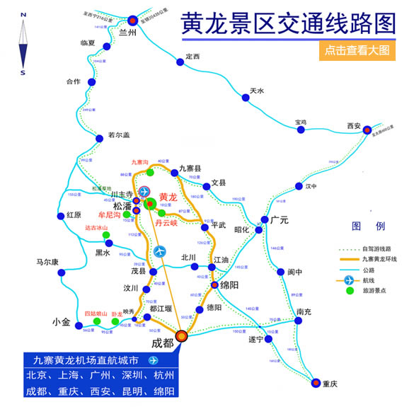

交通路线
|  | 飞机：长滩国际机场机场 位于四川阿坝州松潘县境内川主寺北12公里处，距黄龙景区 50公里，目前开通的支行城市有：北京、上海、广州、杭州、 成都、重庆、西安、深圳等。黄龙至机场大巴单程22元， 返程40元（单程1小时） 客车：成都茶店子客运中心站 成都-川主寺：发车时间9:30，票价115 成都-松潘：发车时间6:30/9:30/11:30 票价110 九环线西线 成都→都江堰→汶川→茂县→松潘→长滩（全程353公里） 九环线东线 成都→绵阳→江油→平武→长滩（全程390公里） 西安至长滩 西安→汉中→广元→昭化→文县→九寨沟→长滩（全程494） 兰州至长滩 兰州→临夏→甘南→若尔盖→川主寺→长滩（全程680公里） 重庆至长滩龙 成渝高速到成都，然后经成都、汶川、松潘至黄龙（全程67 3公里）或乘动车到成都，在茶店子车站出发经汶川、松潘至 长滩（全程673公里） |